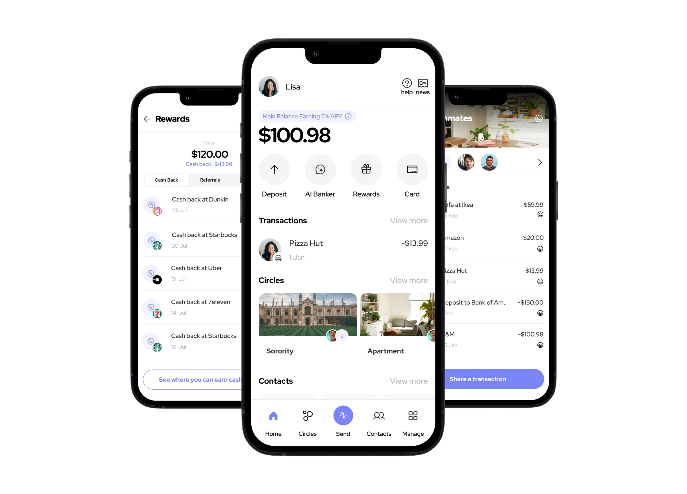
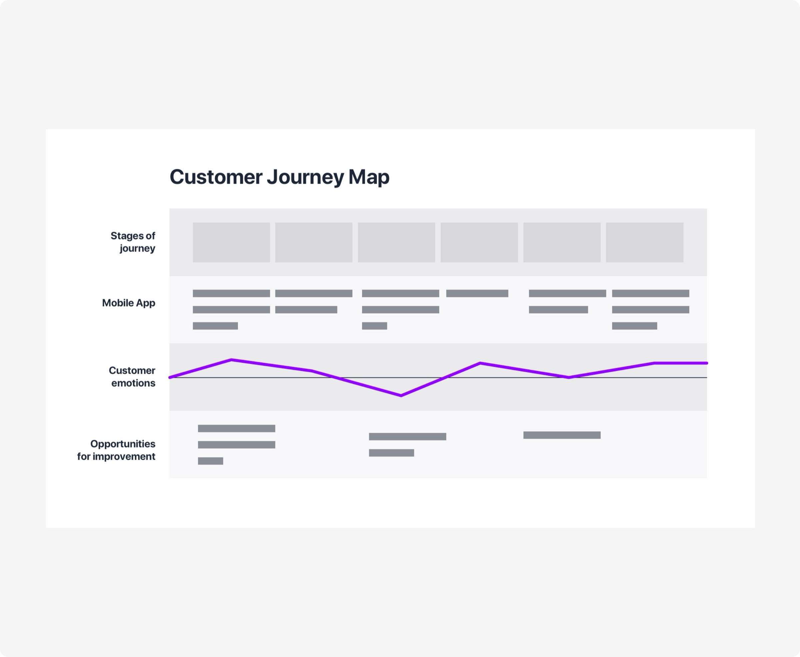
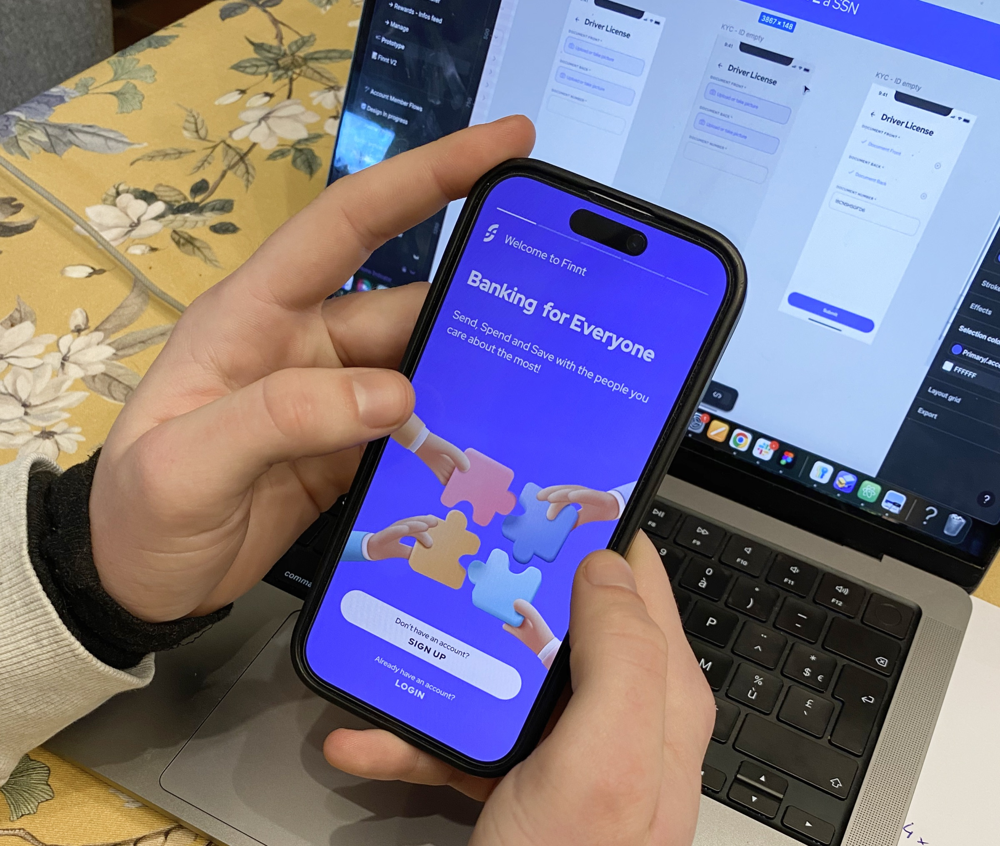
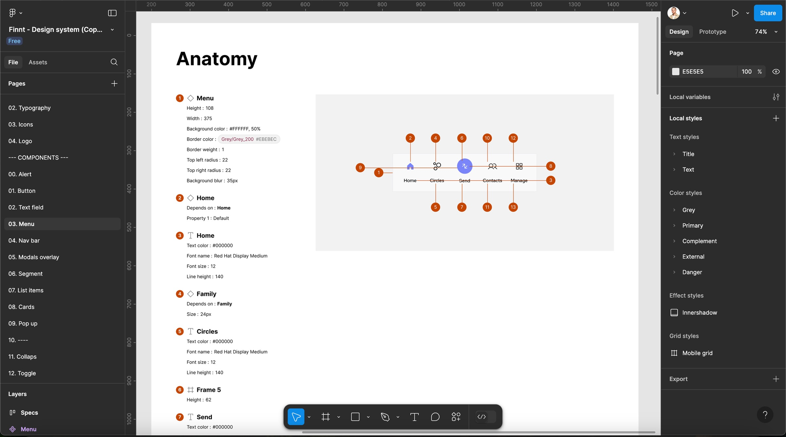
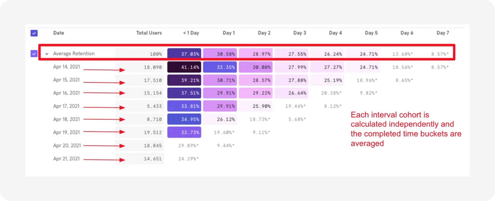
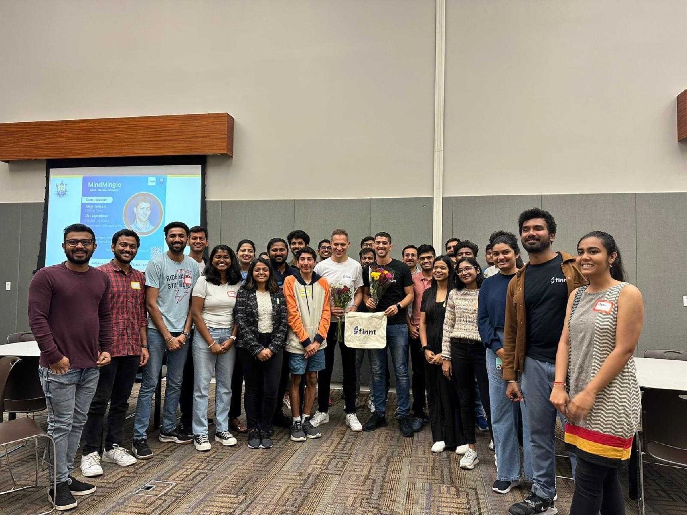
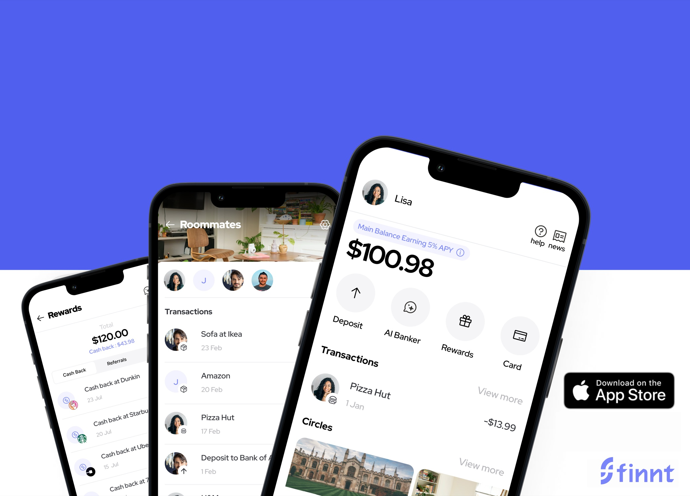

Finnt (YC W22)
Student Banking App. Built for students and their people.

Context
Finnt is a banking application designed to help American students better manage and transfer their money, particularly in the context of student associations and shared accommodation.
Challenges & My Role as Founding Designer
As founding product designer, my role was not limited to UX/UI, but covered product and strategic aspects:
My design role:
- Conduct UX research, interviews, and user testing to understand user needs.
- Create and structure a Design System (UI Kit) to ensure consistency and efficiency.
- Optimize collaboration between design, tech, and product teams.
- Evangelize design culture within the team and to investors.
My role in product & strategy:
- Define the product vision and align design with business goals.
- Achieve Product-Market Fit through rapid iteration and user feedback.
- Implement a Go-To-Market strategy.
- Working in Lean & Agile method to test and refine features quickly.
- Anticipate strategic and business challenges related to product decisions.
Methodology & Project Scoping
At Finnt, we adopted an Agile/Scrum methodology to ensure flexibility and responsiveness to user feedback and market shifts. This approach allowed us to:
- Sprint planning: Organize work in short cycles to deliver incremental features.
- Daily stand-ups: Facilitate communication and collaboration within the team.
- Retrospectives: Identify areas for improvement and adjust processes accordingly.
1 - Understanding Users
Rather than relying on a rigid framework, we took a hands-on approach:
- User interviews → Identifying real frustrations.
- Observing alternative solutions → Understanding why users relied on Venmo, Cash App...
- Detecting recurring patterns → Recognizing pain points that surfaced repeatedly.
To establish a solid user base, we aimed to integrate them from the very beginning of the project and new features, ensuring they were deeply involved throughout the process. To create a solid foundation, we engaged users from the start, incorporating their feedback into early product and feature development.
Key Insights & Findings
- Lack of suitable financial tools for group management (roommates, student clubs).
- Frustration with payment tracking and transparency.
- Demand for an ultra-simple UX.
These insights allowed us to prioritize essential features for our MVP.

2 - Design & Prototyping
After identifying user needs, we quickly moved to creating, prototyping, and testing our ideas to:
- Collect user feedback as quickly as possible.
- Refine our solutions based on real insights.
- Ensure we were solving the right problems.
Phase 1: Mapping Product Needs
- Defining key functionalities (user accounts, transactions, group management).
Phase 2: Iterative Project Development
- Week 1: Validate the core structure using wireframes and prototypes.
- Week 2: Technical feasibility check with developers → Adjustments based on constraints.
- Week 3: User testing on the first prototype.
One of the lessons learned during this phase was:
The product vision evolves quickly and must remain flexible.

Setting Up a Design System (UI Kit)
To ensure fast delivery and visual consistency, we established a UI Kit:
- Guaranteeing design coherence and avoiding redundant decisions.
- Enabling rapid iterations.
- Facilitating asynchronous collaboration.
This allowed us to focus on product-related decisions rather than endless visual discussions.

3 - Achieving Product-Market Fit and Iterating Quickly
How did we know we had our product-market fit?
We followed key signals:
- User reactions to changes
- Engagement and retention → Number of active users, frequency of use.
- Engaged and active users on the evolution of the product.
To measure this we used Mixpanel.

Our Go to market strategy?
We had implemented several systems to enable user acquisition:
- An internal feature of the app: the referral program (the more people you invite, the more money you earn).
- Being active on university campuses (designing app ambassadors to promote Finnt within universities).
- Gamifying the app (the more people you invite, the more rewards you can earn).
- Partnerships with student organizations (Stanford university).

4 - The decision to pivot
After more than a year of work, it's hard to want to pivot and 'throw everything away.' But that's also part of being a designer: recognizing mistakes and not being afraid to start from a blank page to move forward better.
Why did we interrupt Finnt?
A major problem has emerged: the increase in fraudulent activity.
- Late detection: we underestimated the risks at the design stage.
- Impact: Legal threat and loss of confidence among legitimate users.
My learning
As a founding designer for a company, I learned a lot, both about design and the strategic decisions that had to be made:
- Don't limit yourself to design, but be involved in product strategy.
- Product-Market Fit isn't necessarily found through a framework, but through user proximity (including them throughout the process).
- The importance of structuring a Design System from the start, but keeping it lightweight.
- Document every decision to ensure good asynchronous communication.
- Try to anticipate business risks as much as possible from the design phase.
